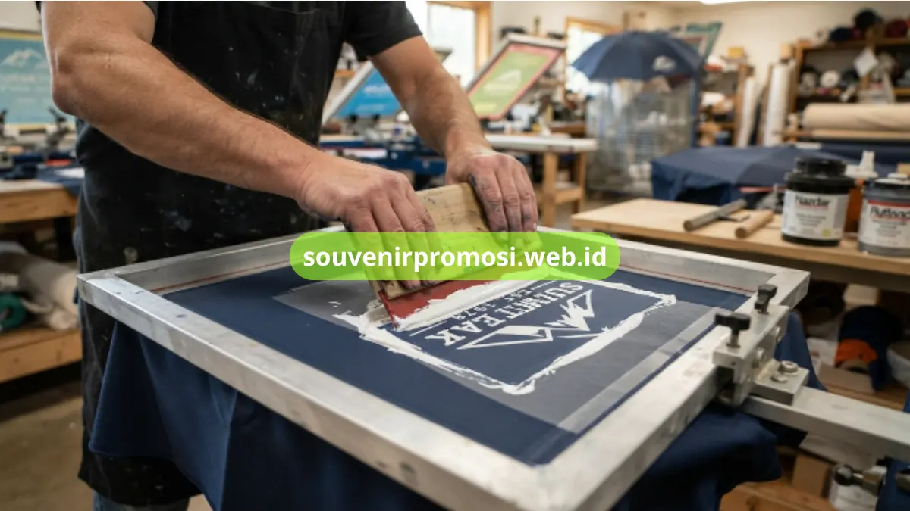

Poin Penting
- Payung lipat promosi memiliki area cetak yang luas sebagai media branding efektif.
- Tersedia opsi cetak 1, 2, atau 4 sisi sesuai kebutuhan strategi branding Anda.
- Warna kanopi dapat disesuaikan dengan corporate identity perusahaan.
- Metode cetak sablon menggunakan tinta khusus kain yang tahan lama dan tidak mudah luntur.
- Proses dikerjakan secara profesional dengan quality control yang ketat.
Daftar Isi
Pendahuluan
Cetak logo pada payung lipat promosi memanfaatkan luasnya permukaan kanopi sebagai media branding berjalan yang terlihat berulang kali oleh pemakainya maupun orang di sekitar, baik saat digunakan di jalan, area parkir, maupun acara outdoor.
Berbeda dari merchandise berukuran kecil, payung memberi ruang cetak yang jauh lebih luas sehingga logo, tagline, bahkan nomor kontak perusahaan dapat ditampilkan dengan jelas dari jarak pandang yang cukup jauh. Souvenir Promosi menangani proses cetak logo payung lipat promosi dari tahap desain hingga produksi massal melalui souvenirpromosi.web.id.
Strategi Penempatan Logo pada Payung Lipat
Cetak 1 Sisi untuk Tampilan Minimalis dan Elegan
Cetak logo pada satu sisi kanopi memberikan tampilan yang lebih minimalis dan cocok untuk perusahaan yang mengusung identitas visual sederhana dan elegan. Pilihan ini juga umumnya lebih efisien dari sisi biaya produksi karena hanya membutuhkan satu kali proses sablon per unit payung. Souvenir Promosi merekomendasikan cetak 1 sisi untuk souvenir dengan desain logo yang sudah memiliki kekuatan visual tinggi meski ditampilkan tunggal.
Cetak 2 Sisi Berlawanan untuk Keseimbangan Visual
Cetak logo pada dua sisi kanopi yang saling berlawanan membuat logo tetap terlihat dari berbagai sudut pandang saat payung digunakan di tempat ramai. Penempatan ini banyak dipilih untuk souvenir korporat yang ingin memastikan brand tetap terekspos meski payung dilihat dari arah yang berbeda-beda. Souvenir Promosi menyediakan opsi cetak 2 sisi dengan penyesuaian posisi logo sesuai bentuk kanopi tiap model payung.
Cetak 4 Sisi untuk Maksimalisasi Brand Awareness
Cetak logo pada empat sisi kanopi memberikan eksposur brand paling maksimal karena logo akan terlihat dari hampir seluruh sudut pandang di sekitar pengguna payung. Opsi ini paling cocok untuk model payung berukuran besar seperti payung golf lipat yang memang menyediakan ruang cetak lebih luas. Souvenir Promosi memfasilitasi cetak 4 sisi dengan hasil warna yang konsisten pada setiap panel kanopi.

Pemilihan Warna Payung Sesuai Corporate Identity
Warna kain kanopi sebaiknya disesuaikan dengan warna corporate identity perusahaan agar logo tampil estetis dan tidak bertabrakan secara visual saat dicetak. Kombinasi warna kanopi yang terlalu ramai dapat membuat logo justru kurang menonjol, sehingga pemilihan warna dasar polos atau warna brand utama biasanya lebih direkomendasikan.
Souvenir Promosi menyediakan pilihan warna kanopi custom yang dapat disesuaikan dengan panduan warna brand perusahaan Anda.
Metode Cetak Sablon Berkualitas Tinggi
Metode cetak sablon yang digunakan turut menentukan seberapa lama hasil cetak logo bertahan tanpa luntur atau mengelupas meski sering terkena air hujan dan terik matahari. Souvenir Promosi menggunakan teknik sablon dengan tinta khusus kain berbahan polyester dan pongee, sehingga hasil cetak tetap tajam meski payung digunakan dalam jangka panjang. Proses quality control dilakukan pada setiap batch produksi untuk memastikan konsistensi warna logo antar unit payung.
Wujudkan Desain Payung Promosi Anda Bersama Souvenir Promosi
Dari pemilihan posisi cetak, warna kanopi, hingga metode sablon, seluruh proses cetak logo payung lipat promosi dikerjakan oleh tim Souvenir Promosi dengan standar akurasi warna dan ketajaman hasil cetak yang terjaga. Kirimkan file logo perusahaan Anda dan tim desain kami akan membantu menentukan tata letak paling optimal.
Segera hubungi tim kami untuk konsultasi dan pemesanan dengan harga terbaik untuk kebutuhan promosi perusahaan Anda!